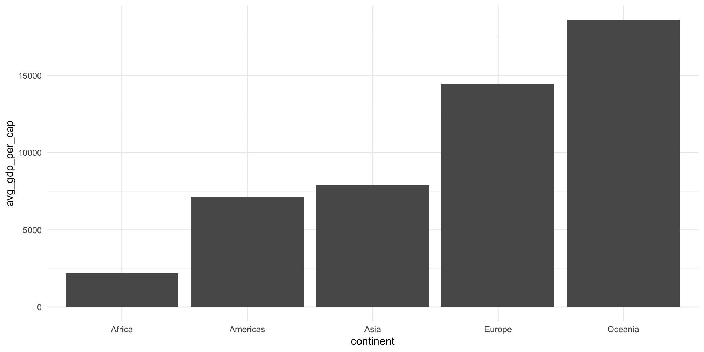
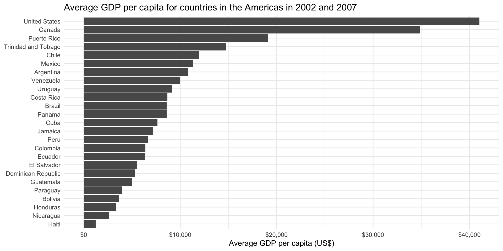

seq(1, 10) [1] 1 2 3 4 5 6 7 8 9 10This section focuses on introducing you to some new R skills. Data rarely come to us perfectly formatted and without annoying errors or inconsistencies. We can use R to clean our data up and get them ready for analysis.
This session, we will explore the long-studied relationship between countries’ health and wealth. Attention was brought to this relationship by the Gapminder project. You can read more about their research here.
Before we get started, check out this video that describes (very enthusiastically) the relationship between health and wealth:
Today, I am going to introduce you to some of my most widely used functions in R. The dplyr R package, which houses these functions, focuses on providing you with some very helpful tools to tidy your data. This step in the data analysis process is critical, and often one of the most time consuming, so let’s get started!
As a reminder, objects sit in R’s memory. You can see which ones exist in your current session and their values over in the environment tab.
To create a new object, use: <-. You can update that object at any time.
Some people use = instead of <-. I strongly recommend against this. It makes your script difficult to read, and it can lead to syntax errors.
Functions are helpful short-hands that perform specific tasks in R. Many of these functions come straight out of the box with R. For example, you can run the following code without loading any packages into your current session:
seq(1, 10) [1] 1 2 3 4 5 6 7 8 9 10The seq() function takes three main arguments: a start value, end value, and interval value. Above I have asked it to start at 1 and end at 10. By default, its interval value is 1. Therefore, its output is every whole number from 1 to 10.
You can even create objects with R functions:
x <- seq(1, 10)
x [1] 1 2 3 4 5 6 7 8 9 10Now, the x object is a vector of all 10 whole numbers from 1 to 10.
As mentioned above, we are going to be using the Gapminder project’s data on countries’ health and wealth to explore data transformation. Happily, there is an R package that provides that data for us. We will now install it:
install.packages("gapminder")Next, you want to create a new script for this session. At the top of that script, include the code to load in the packages we will be using today:
You can now access the Gapminder data directly:
gapminder# A tibble: 1,704 × 6
country continent year lifeExp pop gdpPercap
<fct> <fct> <int> <dbl> <int> <dbl>
1 Afghanistan Asia 1952 28.8 8425333 779.
2 Afghanistan Asia 1957 30.3 9240934 821.
3 Afghanistan Asia 1962 32.0 10267083 853.
4 Afghanistan Asia 1967 34.0 11537966 836.
5 Afghanistan Asia 1972 36.1 13079460 740.
6 Afghanistan Asia 1977 38.4 14880372 786.
7 Afghanistan Asia 1982 39.9 12881816 978.
8 Afghanistan Asia 1987 40.8 13867957 852.
9 Afghanistan Asia 1992 41.7 16317921 649.
10 Afghanistan Asia 1997 41.8 22227415 635.
# ℹ 1,694 more rowsAbove, R prints out some useful information about our data. First, we learn that it is a tibble. This is the tidyverse version of a data frame.
Second, we learn how many rows and columns are included in our data set. We have 1,704 rows and 6 columns.
Next, we learn the column (or variable) titles:
colnames(gapminder)[1] "country" "continent" "year" "lifeExp" "pop" "gdpPercap"Next, we see some funny looking three letter words under each column name. These refer to the column’s data type. We will discuss these below.
Finally, we see the first few rows of our data set. We can see that each row provides a country’s information in a single year.
Those funny three-letter words refer to the column’s data type. In this data set, we have three different types:
<fct>, which stands for factor (R’s word for categorical variable)
<int>, which stands for integer
<dbl>, which stands for double (or real number)
Some other common data types include:
<chr>, which stands for character (or string)
<dttm>, which stands for date-time
<lgl>, which stands for local (which can only be TRUE or FALSE)
Data types are important because each column can only contain one data type. You cannot, for example, include a character in an integer column (imagine trying to run some calculation on that column: how would R treat the stray character value?).
dplyr basicsNow we know a little bit more about our data set, we are going to use it to explore five of the most commonly used functions in R:
What is the unit of observation for the gapminder data set?
The unit of observation is country-year.
How many country-years are included in the gapminder data set?
nrow(gapminder)[1] 1704Which two variables in the gapminder data set are factors?
country and continent are factors (or categorical variables).
We are going to start by learning how to filter our data to only include those observations we are interested in exploring.
All dplyr functions are structured the same way. They take the data object you want to transform as their first argument. You then need to identify the columns within that data object you want to transform and what you want to do with them.
For example, the following code takes our data set, gapminder, and tells filter() that we want to only include rows in which the country column matches “Australia” and the year column is greater than 2000:
filter(gapminder, country == "Australia", year > 2000)# A tibble: 2 × 6
country continent year lifeExp pop gdpPercap
<fct> <fct> <int> <dbl> <int> <dbl>
1 Australia Oceania 2002 80.4 19546792 30688.
2 Australia Oceania 2007 81.2 20434176 34435.We can ask filter() to include rows that match multiple values:
# A tibble: 420 × 6
country continent year lifeExp pop gdpPercap
<fct> <fct> <int> <dbl> <int> <dbl>
1 Afghanistan Asia 1952 28.8 8425333 779.
2 Afghanistan Asia 1957 30.3 9240934 821.
3 Afghanistan Asia 1962 32.0 10267083 853.
4 Afghanistan Asia 1967 34.0 11537966 836.
5 Afghanistan Asia 1972 36.1 13079460 740.
6 Afghanistan Asia 1977 38.4 14880372 786.
7 Afghanistan Asia 1982 39.9 12881816 978.
8 Afghanistan Asia 1987 40.8 13867957 852.
9 Afghanistan Asia 1992 41.7 16317921 649.
10 Afghanistan Asia 1997 41.8 22227415 635.
# ℹ 410 more rowsHere, I have used the %in% value and a vector (which is c(...)) of strings to ask filter to include all rows in which the continent column matches the values “Asia” and “Oceania”.
We can ask filter() to include values within a range. The following code asks filter() to include all rows in which the pop column is greater than 500,000 and less than 1,000,000:
filter(gapminder, pop > 500000 & pop < 1000000)# A tibble: 88 × 6
country continent year lifeExp pop gdpPercap
<fct> <fct> <int> <dbl> <int> <dbl>
1 Bahrain Asia 1992 72.6 529491 19036.
2 Bahrain Asia 1997 73.9 598561 20292.
3 Bahrain Asia 2002 74.8 656397 23404.
4 Bahrain Asia 2007 75.6 708573 29796.
5 Botswana Africa 1962 51.5 512764 984.
6 Botswana Africa 1967 53.3 553541 1215.
7 Botswana Africa 1972 56.0 619351 2264.
8 Botswana Africa 1977 59.3 781472 3215.
9 Botswana Africa 1982 61.5 970347 4551.
10 Comoros Africa 1997 60.7 527982 1174.
# ℹ 78 more rowsThe following code asks filter() to include all rows in which the pop column is greater than 500,000 or less than 1,000,000.
filter(gapminder, pop > 500000 | pop < 1000000)# A tibble: 1,704 × 6
country continent year lifeExp pop gdpPercap
<fct> <fct> <int> <dbl> <int> <dbl>
1 Afghanistan Asia 1952 28.8 8425333 779.
2 Afghanistan Asia 1957 30.3 9240934 821.
3 Afghanistan Asia 1962 32.0 10267083 853.
4 Afghanistan Asia 1967 34.0 11537966 836.
5 Afghanistan Asia 1972 36.1 13079460 740.
6 Afghanistan Asia 1977 38.4 14880372 786.
7 Afghanistan Asia 1982 39.9 12881816 978.
8 Afghanistan Asia 1987 40.8 13867957 852.
9 Afghanistan Asia 1992 41.7 16317921 649.
10 Afghanistan Asia 1997 41.8 22227415 635.
# ℹ 1,694 more rowsR includes some handy operators:
== is equal to
!= is not equal to
>= is greater than or equal to
<= is less than or equal to
| is OR
& is AND
%in% is in
Find all country-years that have populations greater than 1 billion people.
filter(gapminder, pop > 1e9)# A tibble: 8 × 6
country continent year lifeExp pop gdpPercap
<fct> <fct> <int> <dbl> <int> <dbl>
1 China Asia 1982 65.5 1000281000 962.
2 China Asia 1987 67.3 1084035000 1379.
3 China Asia 1992 68.7 1164970000 1656.
4 China Asia 1997 70.4 1230075000 2289.
5 China Asia 2002 72.0 1280400000 3119.
6 China Asia 2007 73.0 1318683096 4959.
7 India Asia 2002 62.9 1034172547 1747.
8 India Asia 2007 64.7 1110396331 2452.Note: 1e9 is scientific notation for 1 billion (which has nine zeros).
Find all countries in Oceania.
filter(gapminder, continent == "Oceania")# A tibble: 24 × 6
country continent year lifeExp pop gdpPercap
<fct> <fct> <int> <dbl> <int> <dbl>
1 Australia Oceania 1952 69.1 8691212 10040.
2 Australia Oceania 1957 70.3 9712569 10950.
3 Australia Oceania 1962 70.9 10794968 12217.
4 Australia Oceania 1967 71.1 11872264 14526.
5 Australia Oceania 1972 71.9 13177000 16789.
6 Australia Oceania 1977 73.5 14074100 18334.
7 Australia Oceania 1982 74.7 15184200 19477.
8 Australia Oceania 1987 76.3 16257249 21889.
9 Australia Oceania 1992 77.6 17481977 23425.
10 Australia Oceania 1997 78.8 18565243 26998.
# ℹ 14 more rowsFind all countries in both Asia and Europe.
# A tibble: 756 × 6
country continent year lifeExp pop gdpPercap
<fct> <fct> <int> <dbl> <int> <dbl>
1 Afghanistan Asia 1952 28.8 8425333 779.
2 Afghanistan Asia 1957 30.3 9240934 821.
3 Afghanistan Asia 1962 32.0 10267083 853.
4 Afghanistan Asia 1967 34.0 11537966 836.
5 Afghanistan Asia 1972 36.1 13079460 740.
6 Afghanistan Asia 1977 38.4 14880372 786.
7 Afghanistan Asia 1982 39.9 12881816 978.
8 Afghanistan Asia 1987 40.8 13867957 852.
9 Afghanistan Asia 1992 41.7 16317921 649.
10 Afghanistan Asia 1997 41.8 22227415 635.
# ℹ 746 more rowsFind all country-years that have a life expectancy greater than 50 years and less than 60 years.
filter(gapminder, lifeExp > 50 & lifeExp < 60)# A tibble: 336 × 6
country continent year lifeExp pop gdpPercap
<fct> <fct> <int> <dbl> <int> <dbl>
1 Albania Europe 1952 55.2 1282697 1601.
2 Albania Europe 1957 59.3 1476505 1942.
3 Algeria Africa 1967 51.4 12760499 3247.
4 Algeria Africa 1972 54.5 14760787 4183.
5 Algeria Africa 1977 58.0 17152804 4910.
6 Bahrain Asia 1952 50.9 120447 9867.
7 Bahrain Asia 1957 53.8 138655 11636.
8 Bahrain Asia 1962 56.9 171863 12753.
9 Bahrain Asia 1967 59.9 202182 14805.
10 Bangladesh Asia 1982 50.0 93074406 677.
# ℹ 326 more rowsFind all country-years that have a life expectancy less than 50 years or greater than 60 years.
filter(gapminder, lifeExp < 50 | lifeExp > 60)# A tibble: 1,368 × 6
country continent year lifeExp pop gdpPercap
<fct> <fct> <int> <dbl> <int> <dbl>
1 Afghanistan Asia 1952 28.8 8425333 779.
2 Afghanistan Asia 1957 30.3 9240934 821.
3 Afghanistan Asia 1962 32.0 10267083 853.
4 Afghanistan Asia 1967 34.0 11537966 836.
5 Afghanistan Asia 1972 36.1 13079460 740.
6 Afghanistan Asia 1977 38.4 14880372 786.
7 Afghanistan Asia 1982 39.9 12881816 978.
8 Afghanistan Asia 1987 40.8 13867957 852.
9 Afghanistan Asia 1992 41.7 16317921 649.
10 Afghanistan Asia 1997 41.8 22227415 635.
# ℹ 1,358 more rowsWe can control the order of our data using arrange(). The following code sorts our data by country name (alphabetically) and year (in ascending numerical order):
arrange(gapminder, country, year)# A tibble: 1,704 × 6
country continent year lifeExp pop gdpPercap
<fct> <fct> <int> <dbl> <int> <dbl>
1 Afghanistan Asia 1952 28.8 8425333 779.
2 Afghanistan Asia 1957 30.3 9240934 821.
3 Afghanistan Asia 1962 32.0 10267083 853.
4 Afghanistan Asia 1967 34.0 11537966 836.
5 Afghanistan Asia 1972 36.1 13079460 740.
6 Afghanistan Asia 1977 38.4 14880372 786.
7 Afghanistan Asia 1982 39.9 12881816 978.
8 Afghanistan Asia 1987 40.8 13867957 852.
9 Afghanistan Asia 1992 41.7 16317921 649.
10 Afghanistan Asia 1997 41.8 22227415 635.
# ℹ 1,694 more rowsTo sort in descending order, simply wrap your column name in the desc() function:
# A tibble: 1,704 × 6
country continent year lifeExp pop gdpPercap
<fct> <fct> <int> <dbl> <int> <dbl>
1 Afghanistan Asia 2007 43.8 31889923 975.
2 Afghanistan Asia 2002 42.1 25268405 727.
3 Afghanistan Asia 1997 41.8 22227415 635.
4 Afghanistan Asia 1992 41.7 16317921 649.
5 Afghanistan Asia 1987 40.8 13867957 852.
6 Afghanistan Asia 1982 39.9 12881816 978.
7 Afghanistan Asia 1977 38.4 14880372 786.
8 Afghanistan Asia 1972 36.1 13079460 740.
9 Afghanistan Asia 1967 34.0 11537966 836.
10 Afghanistan Asia 1962 32.0 10267083 853.
# ℹ 1,694 more rowsYou can combine arrange() and filter() using the slice_X() functions. For example, you can filter for the smallest value in a column using slice_min(). The following code filters for the smallest value in the lifeExp column:
slice_min(gapminder, lifeExp)# A tibble: 1 × 6
country continent year lifeExp pop gdpPercap
<fct> <fct> <int> <dbl> <int> <dbl>
1 Rwanda Africa 1992 23.6 7290203 737.The following code filters for the largest value in this column:
slice_max(gapminder, lifeExp)# A tibble: 1 × 6
country continent year lifeExp pop gdpPercap
<fct> <fct> <int> <dbl> <int> <dbl>
1 Japan Asia 2007 82.6 127467972 31656.Which country-year has the lowest life expectancy?
arrange(gapminder, lifeExp)# A tibble: 1,704 × 6
country continent year lifeExp pop gdpPercap
<fct> <fct> <int> <dbl> <int> <dbl>
1 Rwanda Africa 1992 23.6 7290203 737.
2 Afghanistan Asia 1952 28.8 8425333 779.
3 Gambia Africa 1952 30 284320 485.
4 Angola Africa 1952 30.0 4232095 3521.
5 Sierra Leone Africa 1952 30.3 2143249 880.
6 Afghanistan Asia 1957 30.3 9240934 821.
7 Cambodia Asia 1977 31.2 6978607 525.
8 Mozambique Africa 1952 31.3 6446316 469.
9 Sierra Leone Africa 1957 31.6 2295678 1004.
10 Burkina Faso Africa 1952 32.0 4469979 543.
# ℹ 1,694 more rowsNote: check out slice_min() and slice_max() for more efficient ways of doing this.
Which country-year has the largest population?
# A tibble: 1,704 × 6
country continent year lifeExp pop gdpPercap
<fct> <fct> <int> <dbl> <int> <dbl>
1 China Asia 2007 73.0 1318683096 4959.
2 China Asia 2002 72.0 1280400000 3119.
3 China Asia 1997 70.4 1230075000 2289.
4 China Asia 1992 68.7 1164970000 1656.
5 India Asia 2007 64.7 1110396331 2452.
6 China Asia 1987 67.3 1084035000 1379.
7 India Asia 2002 62.9 1034172547 1747.
8 China Asia 1982 65.5 1000281000 962.
9 India Asia 1997 61.8 959000000 1459.
10 China Asia 1977 64.0 943455000 741.
# ℹ 1,694 more rowsNote: check out slice_min() and slice_max() for more efficient ways of doing this.
You can focus your data set on only those variables you are interested in using select(). The following code selects only the country, year, and pop variables from our larger gapminder data set:
select(gapminder, country, year, pop)# A tibble: 1,704 × 3
country year pop
<fct> <int> <int>
1 Afghanistan 1952 8425333
2 Afghanistan 1957 9240934
3 Afghanistan 1962 10267083
4 Afghanistan 1967 11537966
5 Afghanistan 1972 13079460
6 Afghanistan 1977 14880372
7 Afghanistan 1982 12881816
8 Afghanistan 1987 13867957
9 Afghanistan 1992 16317921
10 Afghanistan 1997 22227415
# ℹ 1,694 more rowsdplyr includes some operators that help keep your code clean when working with a lot of data. For example, you can use a colon (:) to select all columns between two columns:
select(gapminder, country:pop)# A tibble: 1,704 × 5
country continent year lifeExp pop
<fct> <fct> <int> <dbl> <int>
1 Afghanistan Asia 1952 28.8 8425333
2 Afghanistan Asia 1957 30.3 9240934
3 Afghanistan Asia 1962 32.0 10267083
4 Afghanistan Asia 1967 34.0 11537966
5 Afghanistan Asia 1972 36.1 13079460
6 Afghanistan Asia 1977 38.4 14880372
7 Afghanistan Asia 1982 39.9 12881816
8 Afghanistan Asia 1987 40.8 13867957
9 Afghanistan Asia 1992 41.7 16317921
10 Afghanistan Asia 1997 41.8 22227415
# ℹ 1,694 more rowsYou can use a negative sign (-) to specify which columns you want to exclude:
select(gapminder, -(lifeExp:pop))# A tibble: 1,704 × 4
country continent year gdpPercap
<fct> <fct> <int> <dbl>
1 Afghanistan Asia 1952 779.
2 Afghanistan Asia 1957 821.
3 Afghanistan Asia 1962 853.
4 Afghanistan Asia 1967 836.
5 Afghanistan Asia 1972 740.
6 Afghanistan Asia 1977 786.
7 Afghanistan Asia 1982 978.
8 Afghanistan Asia 1987 852.
9 Afghanistan Asia 1992 649.
10 Afghanistan Asia 1997 635.
# ℹ 1,694 more rowsSelect only the country, year, and lifeExp variables from gapminder.
select(gapminder, country, year, lifeExp)# A tibble: 1,704 × 3
country year lifeExp
<fct> <int> <dbl>
1 Afghanistan 1952 28.8
2 Afghanistan 1957 30.3
3 Afghanistan 1962 32.0
4 Afghanistan 1967 34.0
5 Afghanistan 1972 36.1
6 Afghanistan 1977 38.4
7 Afghanistan 1982 39.9
8 Afghanistan 1987 40.8
9 Afghanistan 1992 41.7
10 Afghanistan 1997 41.8
# ℹ 1,694 more rowsWhat does the any_of() function do? Why might it be helpful in conjunction with this vector?
vars <- c("country", "year", "lifeExp", "boop")# A tibble: 1,704 × 3
country year lifeExp
<fct> <int> <dbl>
1 Afghanistan 1952 28.8
2 Afghanistan 1957 30.3
3 Afghanistan 1962 32.0
4 Afghanistan 1967 34.0
5 Afghanistan 1972 36.1
6 Afghanistan 1977 38.4
7 Afghanistan 1982 39.9
8 Afghanistan 1987 40.8
9 Afghanistan 1992 41.7
10 Afghanistan 1997 41.8
# ℹ 1,694 more rowsWhat does the following code produce?
select(gapminder, starts_with("c"))select(gapminder, starts_with("c"))# A tibble: 1,704 × 2
country continent
<fct> <fct>
1 Afghanistan Asia
2 Afghanistan Asia
3 Afghanistan Asia
4 Afghanistan Asia
5 Afghanistan Asia
6 Afghanistan Asia
7 Afghanistan Asia
8 Afghanistan Asia
9 Afghanistan Asia
10 Afghanistan Asia
# ℹ 1,694 more rowsOftentimes, we need to create new columns from existing ones or change in a consistent way existing columns of data. You can use mutate() to do this. For example, the following code creates a new column, gdp, which is the product of gdpPercap and pop:
mutate(gapminder, gdp = gdpPercap * pop)# A tibble: 1,704 × 7
country continent year lifeExp pop gdpPercap gdp
<fct> <fct> <int> <dbl> <int> <dbl> <dbl>
1 Afghanistan Asia 1952 28.8 8425333 779. 6567086330.
2 Afghanistan Asia 1957 30.3 9240934 821. 7585448670.
3 Afghanistan Asia 1962 32.0 10267083 853. 8758855797.
4 Afghanistan Asia 1967 34.0 11537966 836. 9648014150.
5 Afghanistan Asia 1972 36.1 13079460 740. 9678553274.
6 Afghanistan Asia 1977 38.4 14880372 786. 11697659231.
7 Afghanistan Asia 1982 39.9 12881816 978. 12598563401.
8 Afghanistan Asia 1987 40.8 13867957 852. 11820990309.
9 Afghanistan Asia 1992 41.7 16317921 649. 10595901589.
10 Afghanistan Asia 1997 41.8 22227415 635. 14121995875.
# ℹ 1,694 more rowsThe following code transforms the existing column gdpPercap to its logged form:
# A tibble: 1,704 × 6
country continent year lifeExp pop gdpPercap
<fct> <fct> <int> <dbl> <int> <dbl>
1 Afghanistan Asia 1952 28.8 8425333 6.66
2 Afghanistan Asia 1957 30.3 9240934 6.71
3 Afghanistan Asia 1962 32.0 10267083 6.75
4 Afghanistan Asia 1967 34.0 11537966 6.73
5 Afghanistan Asia 1972 36.1 13079460 6.61
6 Afghanistan Asia 1977 38.4 14880372 6.67
7 Afghanistan Asia 1982 39.9 12881816 6.89
8 Afghanistan Asia 1987 40.8 13867957 6.75
9 Afghanistan Asia 1992 41.7 16317921 6.48
10 Afghanistan Asia 1997 41.8 22227415 6.45
# ℹ 1,694 more rowsYou can combine select() and mutate() using the transmute() function:
transmute(gapminder, country, year, gdp = gdpPercap * pop)# A tibble: 1,704 × 3
country year gdp
<fct> <int> <dbl>
1 Afghanistan 1952 6567086330.
2 Afghanistan 1957 7585448670.
3 Afghanistan 1962 8758855797.
4 Afghanistan 1967 9648014150.
5 Afghanistan 1972 9678553274.
6 Afghanistan 1977 11697659231.
7 Afghanistan 1982 12598563401.
8 Afghanistan 1987 11820990309.
9 Afghanistan 1992 10595901589.
10 Afghanistan 1997 14121995875.
# ℹ 1,694 more rowsCreate a new variable that provides each country-year’s GDP (which you can get by multiplying its GDP with its population).
mutate(gapminder, gdp = gdpPercap * pop)# A tibble: 1,704 × 7
country continent year lifeExp pop gdpPercap gdp
<fct> <fct> <int> <dbl> <int> <dbl> <dbl>
1 Afghanistan Asia 1952 28.8 8425333 779. 6567086330.
2 Afghanistan Asia 1957 30.3 9240934 821. 7585448670.
3 Afghanistan Asia 1962 32.0 10267083 853. 8758855797.
4 Afghanistan Asia 1967 34.0 11537966 836. 9648014150.
5 Afghanistan Asia 1972 36.1 13079460 740. 9678553274.
6 Afghanistan Asia 1977 38.4 14880372 786. 11697659231.
7 Afghanistan Asia 1982 39.9 12881816 978. 12598563401.
8 Afghanistan Asia 1987 40.8 13867957 852. 11820990309.
9 Afghanistan Asia 1992 41.7 16317921 649. 10595901589.
10 Afghanistan Asia 1997 41.8 22227415 635. 14121995875.
# ℹ 1,694 more rowsCreate a new data set that only includes information on each country-year’s name, year, and GDP.
transmute(gapminder, country, year, gdp = gdpPercap * pop)# A tibble: 1,704 × 3
country year gdp
<fct> <int> <dbl>
1 Afghanistan 1952 6567086330.
2 Afghanistan 1957 7585448670.
3 Afghanistan 1962 8758855797.
4 Afghanistan 1967 9648014150.
5 Afghanistan 1972 9678553274.
6 Afghanistan 1977 11697659231.
7 Afghanistan 1982 12598563401.
8 Afghanistan 1987 11820990309.
9 Afghanistan 1992 10595901589.
10 Afghanistan 1997 14121995875.
# ℹ 1,694 more rowsFinally, you can summarize (or aggregate) your data. For example, we often want to find the average of our observations. The following code finds the average population and GDP per capita for all country-years in our data set:
# A tibble: 1 × 2
avg_pop avg_gdp_per_cap
<dbl> <dbl>
1 29601212. 7215.Note that the output is now one row long.
The following finds both the average and mean of our country-years’ populations and GDPs per capita:
summarise(
gapminder,
avg_pop = mean(pop),
median_pop = median(pop),
avg_gdp_per_cap = mean(gdpPercap),
median_gdp_per_cap = median(gdpPercap)
)# A tibble: 1 × 4
avg_pop median_pop avg_gdp_per_cap median_gdp_per_cap
<dbl> <dbl> <dbl> <dbl>
1 29601212. 7023596. 7215. 3532.Sometimes, we want to summarize our data within meaningful groups. For example, we may want to find the average population and GDP per capita for each continent included in our data set. To do this, you need to use the group_by() function to group your data. You can then use the summarise() function to summarize it within those groups:
gapminder_continent <- group_by(gapminder, continent)
summarise(
gapminder_continent,
avg_pop = mean(pop),
avg_gdp_per_cap = mean(gdpPercap)
)# A tibble: 5 × 3
continent avg_pop avg_gdp_per_cap
<fct> <dbl> <dbl>
1 Africa 9916003. 2194.
2 Americas 24504795. 7136.
3 Asia 77038722. 7902.
4 Europe 17169765. 14469.
5 Oceania 8874672. 18622.Calculate each country-year’s GDP.
mutate(gapminder, gdp = pop * gdpPercap)# A tibble: 1,704 × 7
country continent year lifeExp pop gdpPercap gdp
<fct> <fct> <int> <dbl> <int> <dbl> <dbl>
1 Afghanistan Asia 1952 28.8 8425333 779. 6567086330.
2 Afghanistan Asia 1957 30.3 9240934 821. 7585448670.
3 Afghanistan Asia 1962 32.0 10267083 853. 8758855797.
4 Afghanistan Asia 1967 34.0 11537966 836. 9648014150.
5 Afghanistan Asia 1972 36.1 13079460 740. 9678553274.
6 Afghanistan Asia 1977 38.4 14880372 786. 11697659231.
7 Afghanistan Asia 1982 39.9 12881816 978. 12598563401.
8 Afghanistan Asia 1987 40.8 13867957 852. 11820990309.
9 Afghanistan Asia 1992 41.7 16317921 649. 10595901589.
10 Afghanistan Asia 1997 41.8 22227415 635. 14121995875.
# ℹ 1,694 more rowsFind each country’s average GDP across all years in the gapminder data set.
gapminder_country <- group_by(gapminder, country)
gapminder_country_avg <- summarise(
mutate(gapminder_country, gdp = pop * gdpPercap), avg_gdp = mean(gdp)
)
gapminder_country_avg# A tibble: 142 × 2
country avg_gdp
<fct> <dbl>
1 Afghanistan 12709647583.
2 Albania 9094669267.
3 Algeria 96735171261.
4 Angola 25532681843.
5 Argentina 266754123835.
6 Australia 320253755823.
7 Austria 158579002935.
8 Bahrain 7694793798.
9 Bangladesh 80648494456.
10 Belgium 197371599665.
# ℹ 132 more rowsFind the country with the smallest average GDP across these years.
arrange(gapminder_country_avg, avg_gdp)# A tibble: 142 × 2
country avg_gdp
<fct> <dbl>
1 Sao Tome and Principe 151723722.
2 Comoros 450509962.
3 Gambia 551998132.
4 Guinea-Bissau 583673324.
5 Djibouti 647199614.
6 Liberia 1054141313.
7 Equatorial Guinea 1143738921.
8 Lesotho 1257957241.
9 Eritrea 1683400010.
10 Burundi 2253225196.
# ℹ 132 more rowsFind the country with the largest average GDP across these years.
That got messy! We had a lot of different objects representing intermediate steps in our calculations, but we never need those objects again. Can we avoid creating them?
Let’s introduce perhaps the defining feature of the tidyverse: the pipe.
Read the pipe (|>) as:
Take this |> (and then…)
do this |> (and then…)
do this
For example:
gapminder |>
group_by(continent) |>
summarise(avg_pop = mean(pop), avg_gdp_per_cap = mean(gdpPercap)) |>
arrange(avg_gdp_per_cap)# A tibble: 5 × 3
continent avg_pop avg_gdp_per_cap
<fct> <dbl> <dbl>
1 Africa 9916003. 2194.
2 Americas 24504795. 7136.
3 Asia 77038722. 7902.
4 Europe 17169765. 14469.
5 Oceania 8874672. 18622.Reads as:
Take the gapminder data set, and then…
Group it by continent, and then…
Find the average population and GDP per capita for each of those continents, and then…
Sort those summaries by their average GDPs per capita (in ascending order).
You can combine all tidyverse functions with the pipe:
gapminder |>
group_by(continent) |>
summarise(avg_pop = mean(pop), avg_gdp_per_cap = mean(gdpPercap)) |>
ggplot(aes(x = continent, y = avg_gdp_per_cap)) +
geom_col() +
theme_minimal()
It is worth noting that there are two versions of the pipe running around. The first |> is the base pipe. This comes straight out of the box with R. You do not need to load in any packages to use it. The second, %>%, is the tidyverse pipe. To use it, you need to load in either dplyr or the magrittr package.
I have switched to using the base pipe, so that’s the one you will see in all of my code. You can use whichever you prefer!
Use the pipe to calculate the average GDP per capita for countries in the Americas in all years including or after 2000.
gapminder_americas_2000 <- gapminder |>
filter(continent == "Americas", year > 2000) |>
group_by(country) |>
summarise(avg_gdp_per_cap = mean(gdpPercap))
gapminder_americas_2000# A tibble: 25 × 2
country avg_gdp_per_cap
<fct> <dbl>
1 Argentina 10789.
2 Bolivia 3618.
3 Brazil 8599.
4 Canada 34824.
5 Chile 11975.
6 Colombia 6381.
7 Costa Rica 8684.
8 Cuba 7644.
9 Dominican Republic 5295.
10 Ecuador 6323.
# ℹ 15 more rowsPlot your results.
ggplot(gapminder_americas_2000, aes(x = avg_gdp_per_cap, y = reorder(country, avg_gdp_per_cap))) +
geom_col() +
theme_minimal() +
labs(title = "Average GDP per capita for countries in the Americas in 2002 and 2007",
x = "Average GDP per capita (US$)",
y = NULL) +
scale_x_continuous(labels = scales::label_dollar())
Note: Check out the scales R package for very handy formatting functions: https://scales.r-lib.org.